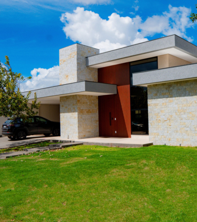

Materiais nobres
Elementos selecionados para reforçar a identidade e a permanência do projeto.

Uma casa contemporânea em que materiais de presença marcante e iluminação natural ajudam a construir uma atmosfera elegante e atemporal.
A Casa Átria representa uma abordagem residencial em que cada escolha participa da composição arquitetônica e da experiência cotidiana.
A combinação de materiais nobres, volumes bem definidos e luz natural cria ambientes com personalidade, equilíbrio e conexão.
Elementos selecionados para reforçar a identidade e a permanência do projeto.
A iluminação participa da arquitetura e muda a percepção dos espaços ao longo do dia.
Proporções, volumes e texturas trabalham em conjunto para uma residência sofisticada.
Converse com a Tejo Engenharia sobre sua construção.